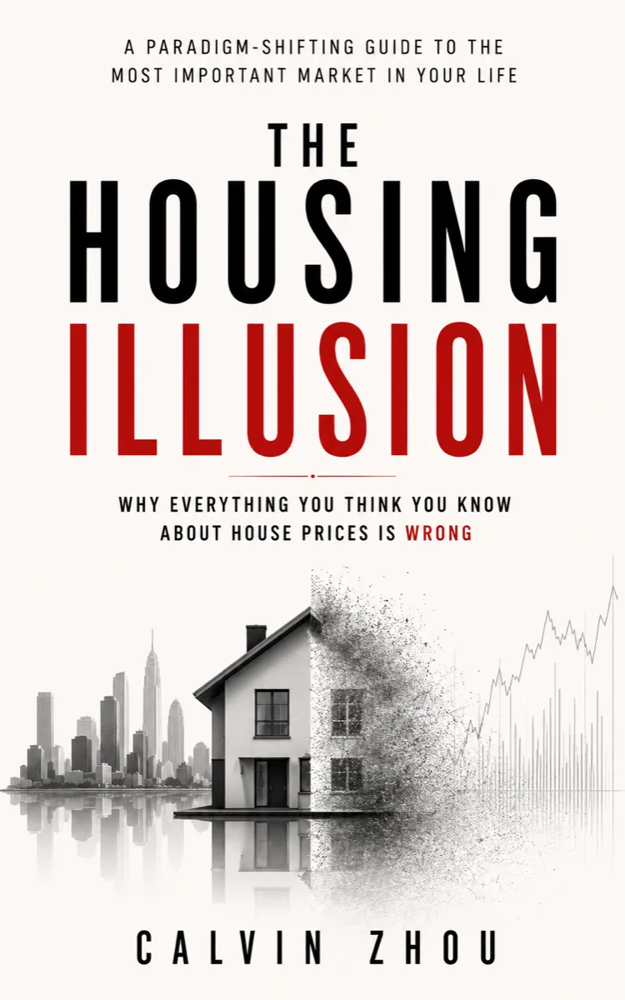

Housing market analysis
The Housing Illusion
Why Everything You Think You Know About House Prices Is Wrong.
House prices are often explained through a handful of familiar stories. The Housing Illusion challenges those shortcuts and examines the deeper forces that shape housing outcomes—from credit, land, policy, and supply to expectations and market behaviour. It offers a clearer framework for reading housing data, questioning popular narratives, and making better-informed real estate decisions.
- For buyers, investors, owners, builders, and market watchers who want to look beyond housing headlines.
- Explores how the forces behind house prices interact rather than treating them as isolated explanations.
- Connects housing-market narratives to practical financial and investment judgment.